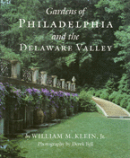

Eloquent narratives and sumptuous full color portraits of this region's most celebrated gardens
Eloquent narratives and sumptuous full color portraits of this region's most celebrated gardens


 Eloquent narratives and sumptuous full color portraits of this region's most celebrated gardens
Eloquent narratives and sumptuous full color portraits of this region's most celebrated gardens

|  |
Gardens of Philadelphia and the Delaware ValleyPhotography by Derek FellWilliam M. Klein, Jr., photographs by Derek Fellcloth EAN: 978-1-56639-313-3 (ISBN: 1-56639-313-2) |
Philadelphia Book Clinic Certificate of Award, 1996
"Encyclopedic in content, poetic in vision, this book is an indispensable addition to the library of anyone interested in the history of gardens in this region, or, for that matter, American gardening as a whole."
—The Philadelphia Inquirer
Once mostly rolling hills and valleys covered with hardwood forest in the seventeenth century, contemporary Philadelphia and the Delaware Valley now claim the largest concentration of many of the finest public and private gardens in the world. William M. Klein explores the broader attitudes and behaviors toward nature that have influenced this developmentt—of colonial farms and gardens created for survival to the art of suburban gardens to nature conservatories and public parks.
Discover how in 300 years we have moved from fencing nature out to fencing nature in. Out of the past, examine the worm fence at Colonial Pennsylvania Plantations, overgrown by weeds as it would have been during Colonial times, zigzagging across the fields tenuously holding back the great forest that presses down. Into the present, consider the chain link fence at the John Heinz Wildlife Refuge at Tinicum that bounds a threatened wetland habitat from the intrusion of highways and reverberates to the sounds of traffic from I-95 and the Philadelphia International Airport.
Klein's eloquent and knowledgeable narrative include detailed portraits of forty-four individual gardens, all lustrously illustrated by noted garden photographer Derek Fell. While considering a particular garden's historical and social influences, Klein discusses the philosophy behind each garden, its planner's goals and even personality, and the garden's interaction with surrounding architecture.
This complete guide also includes each location's address, phone number, hours of operation, events, and featured plants, flowers, and trees. Yet this book goes far beyond the usual guides in this search for answers to the perennial questions of how and why each generation struggles to define its place in nature. As we approach the twenty-first century, the garden has become the metaphor for how we must begin to view all nature today—tended space where we collect, name, nurture, and share our love of plants.
"Philadelphia and its environs are often described as a mecca for American gardens, so it's only fitting that Bill Klein has written an eloquent yet finely detailed account of the horticultural wonders of this area."
—Jane G. Pepper, President, Pennsylvania Horticultural Museum
Foreword
Preface
1. Colonial and Federal Farms and Gardens
Pennsbury Manor •
Andalusia •
The Colonial Pennsylvania Plantation •
Stenton •
The Highlands •
Peter Wentz Farmstead •
Pennsylvania Hospital Physic Garden
2. The Collector's Garden: Recreating Eden
Bartram's Garden •
Tyler Arboretum •
Haverford College Arboretum •
Scott Arboretum of Swarthmore College •
The Henry Foundation for Botanical Research •
Wallingford Rose Garden •
The Jenkins Arboretum •
Morris Arboretum of the University of Pennsylvania
3. A Tradition of Agriculture: From Seeds to Societies
Pennsylvania Horticultural Society •
Temple University Ambler Campus •
Delaware Valley College of Science and Agriculture •
The Arboretum of the Barnes Foundation
4. The Garden as Art
Wyck •
Ebenezer Maxwell Mansion •
Appleford/Parsons-Banks •
Meadowbrook Farm •
Pennypacker Mills •
Chanticleer •
Doe Run Farm •
Swiss Pines
5. America's First Family of Horticulture
Hagley Museum and Library •
Nemours •
Longwood Gardens •
Winterthur Museum, Garden, Library •
Mount Cuba
6. From Private Gardens to Public Parks
Fairmount Park •
Zoological Society of Philadelphia •
The American College Arboretum •
Awbury Arboretum •
Bryn Mawr College •
Independence National Historical Park
7. The Garden as Preserve
Taylor Memorial Arboretum •
Brandywine Conservancy River Museum •
Schuylkill Valley Nature Center for Environmental Education •
Bowman's Hill Wildflower Preserve •
John Heinz Wildlife Refuge at Tinicum
Other Preserves and Gardens of Interest
Map to the Gardens
Visitor's Guide to the Gardens
Selected References
Index
Formerly Director of the Morris Arboretum of the University of Pennsylvania, Dr. William M. Klein, Jr. is Executive Director of the National Tropical Botanical Garden in Lawai, Hawaii. In 1993 he was presented with the American Horticultural Society's Professional Award, and has been a Fellow of the American Association for the Advancement of Science since 1989. He has published many important writings on nature, botany, and landscape, including his previous book, The Vascular Flora of Pennsylvania: Annotated Checklist and Atlas.
Derek Fell is a widely published garden photographer and the author of more than 50 garden books and garden calendars.
© 2015 Temple University. All Rights Reserved. This page: http://www.temple.edu/tempress/titles/640_reg.html.